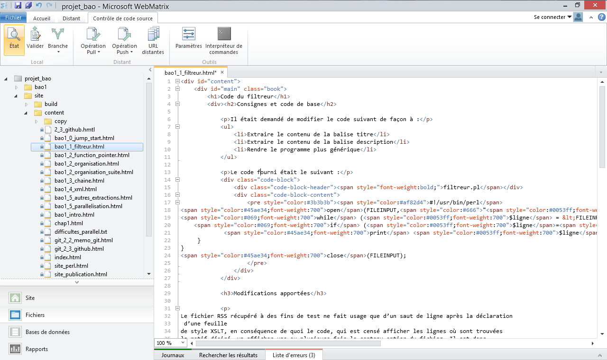

Git sur Windows
Comme git est un outil venant du monde de l'open-source et du logiciel libre et qui a été initialement créé par Linus Torvalds pour géré le code source de Linux, son bon fonctionnement sur Windows n'était pas forcément assuré.
Cependant, comme le logiciel est d'excellente facture et que sa licence permet de le modifier et de le redistribuer, il a été porté sur Windows et même intégré à des produits Microsoft.
L'application GitHub
L'application GitHub , dont l'interface s'inscrit dans la lignée du logiciel Zune, inclue une version de Git pour Windows. C'est donc un moyen simple d'installer à la fois un logiciel permettant de gérer ses dépôts sur GitHub, si on s'en sert, un shell git qui mime les commandes Bash, et qui s'intègre même avec Powershell.
Webmatrix
Webmatrix est un petit logiciel de Microsoft à l'interface relativement minimaliste (on est loin des dizaines de fenêtres d'un Visual Studio) qui sert d'environnement de développement web. Il supporte plusieurs langages, notamment le PHP et inclue le serveur web IIS Express pour le développement, ce qui permet de tester ses sites sans avoir à les déployer sur un serveur IIS ou Apache ni à configurer un serveur complet sur sa machine.
Parmi les fonctionnalités cool de ce logiciel, on retrouve la possibilité d'aller récupérer des fichiers depuis un dépôt git via un URL puis de gérer les commits, push et pull depuis l'interface.
